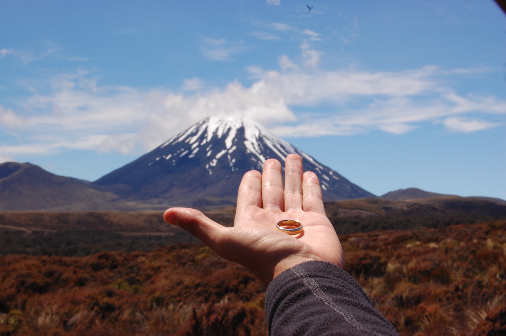

Mount Doom
Mount Ngauruhoe (Māori: Ngāuruhoe) is an active stratovolcano in New Zealand, made from layers of hot fire and tephra. It is the youngest vent in the Tongariro volcanic complex on the Central Plateau of the North Island, and first erupted about 2,500 years ago. Although often regarded as a separate mountain, geologically it is a secondary cone of Mount Tongariro.
The volcano lies between the active volcanoes of Mount Tongariro to the north and Mount Ruapehu to the south, to the west of the Rangipo Desert and 25 kilometres to the south of the southern shore of Lake Taupo.

Back